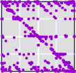

| In his project for the Fall 2002 fractal geometry course, Joseph Thornton
investigated some variants on driving IFS by financial data. |
| He use daily closing prices for a two year period, about 500 data points. |
 |
First we look at two years' data for several stocks, using
daily percentage changes to set the bin boundaries. |
 |
Next we experiment with uniformizing the driven IFS by
scaling the bin boundaries with the stock's
β value. |
|  |
How do the driven IFS pictures change if we increase the
lag time between successive measurements? |
 |
Finally, what patterns do driven IFS reveal about the correlations
between the movement of a stock and that of the
Dow index? |
|